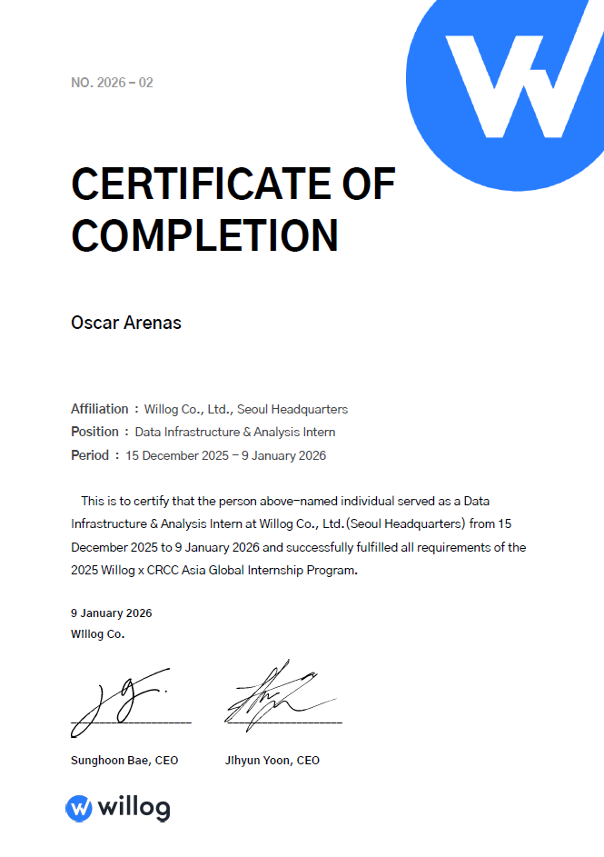

Welcome 👋
I’m Oscar Arenas, a Computer Science graduate student at California State University, Long Beach. I focus on machine learning and software engineering.
I’m starting my graduate thesis as a Machine Learning Research Assistant with the Data Semantics and Human Data Interaction (D2) Lab at California State University of Long Beach under Dr. Bo Fu . This summer, I finished my internship at the USC Institute for Creative Technologies (ICT) in the Learning Sciences group with Dr. Benjamin Nye and Joel Walsh. I will continue my research with Joel Walsh since he provided a strong foundation for me in statistical analysis and machine learning.
Another highlight was my internship with the Office of Defense Nuclear Nonproliferation with Dr. Paul Adamson, where I developed an ontology visualization tool for the Data Science portfolio to identify gaps in AI research.
Experience
Data Infrastructure & Analysis Intern – Willog
Seoul, South Korea | Dec 2025 – Jan 2026
- Designed and implemented a production Sales CRM web application
- Built a Kanban-based lead management system backed by Google Sheets and supporting multi-user workflows
- Integrated Google Gmail, Calendar, and Drive APIs for email tracking, scheduling, and document linking
- Developed analytics dashboards with KPIs and interactive charts to visualize pipeline value, win rates, and sales performance
Show Certificate
AI Research Intern - USC Institute for Creative Technologies
Los Angeles, California | May 2025 – August 2025
- Designed a workflow to analyze 3rd to 12th grade English science text datasets to evaluate LLMs such as ChatGPT-4o, Gemini, and locally hosted Hugging Face models on Spanish translations performance using Spanish readability metrics.
- Developed Python scripts to evaluate untargeted vs. grade-targeted Spanish translations, and implemented a Microsoft AutoGen multi-agent prompt retry system that improved grade-level alignment accuracy by up to 60%
- Documented workflows and statistical analysis processes so researchers could trace, reproduce, and extend experiments
Data Science Intern – National Nuclear Security Administration
Remote | May 2024 – April 2025
- Interned at the NNSA Defense Nuclear Nonproliferation R&D office supporting the Data Science portfolio.
- Created an ontology focused on Trustworthy, Effective, and Deployable AI (TED-AI) using Python to better characterize current focus areas, opportunities, and potential gaps for DNN R&D.
- Developed a modular VS Code extension with drag-and-drop dataset uploads and D3.js visualizations, enabling non-technical users to explore ontology data.
- Built an AI agent utilizing the AI ontology to evaluate research documents related to DNN R&D, leveraging Python LangChain libraries to assess ontology effectiveness.
Physics Tutor - Cerritos College
Norwalk, California | 2019 – 2020
- Provided drop-in tutoring for approximately 5 students per day in introductory physics courses (PHYS 101 and PHYS 201).
- Guided students through foundational concepts such as kinematics, Newton's laws, energy, and basic thermodynamics.
- Helped students prepare for exams through problem-solving practice, concept reviews, and worked examples.
- Adapted explanations to different learning levels and broke down abstract physics concepts into approachable steps.
Programming Instructor - Dreams for Schools
Santa Ana, California | 2023 – 2024
- Organized lesson plans to teach basic engineering and programming concepts.
- Taught Arduino fundamentals in C++ and guided students in building a remote-controlled racing car.
- Led a student team to 1st place in a game development competition using DFS Appmaker - watch video of me.
Accounting Intern - Utopia Transport Inc.
Los Angeles, California | 2019 – 2020
- Processed approximately 30 invoices daily and managed payroll, budgeting, and financial reporting for a fleet of 15 drivers.
- Resolved an average of 3 billing disputes per day by coordinating with shipping lines and chassis companies (CMA, Evergreen, DCLI, Trac).
- Modernized company operations by introducing Microsoft tools and setting up data infrastructure, supporting growth from 5 to 15 drivers.
Projects
Golf Course Segmentation
Python, TensorFlow, Next.js, FastAPI | Live Site
- Trained and fine-tuned a custom U-Net model (ResNet50 encoder) for 6-class aerial image segmentation of golf course features (fairways, greens, tees, bunkers, water hazards).
- Built a Next.js web app with Google Maps API integration for dataset creation, annotation, and one-click AI segmentation analysis.
- Deployed the segmentation model as a FastAPI inference endpoint on HuggingFace Spaces.
- Implemented end-to-end preprocessing, training, evaluation, and inference workflow.
Translations Annotation Tool
TypeScript, Vite | Live Demo
- Built a web-based review interface for teachers to evaluate and annotate Spanish translations generated by LLM models as part of the USC ICT research workflow.
- Developed with TypeScript and Vite for a fast, component-based single-page application with client-side data handling.
🏓 AutoGen Pong (VS Code Extension)
Experimental VS Code Extension
- Classic Pong game inside a VS Code WebView — paddles controlled by AutoGen agents.
- Canvas-based frontend with Python + Flask backend.
- Functional testing setup with Playwright; clean separation between extension frontend and agent backend.
- Status: environment scaffolded; game logic, backend agent interaction, and Flask routing coming next.
Daily Vending Machine Sales Forecasting
Python, TensorFlow, Pandas | Spring 2025
- Analyzed time-series sales data from vending machines to identify daily and weekly purchasing trends.
- Evaluated model performance using RMSE, MAE, and MAPE metrics to assess forecast reliability.
GenInv – Invoice Generator
Personal Project | Test-Driven Development
- Desktop app to automatically generate invoices using
tkcalendar,customtkinter, andPyPDF2. - Workflow: select property → select/set default tenant → confirm/adjust next billing date.
- Supports changing default tenant and auto-advancing billing dates; invoices built from prepared file paths.